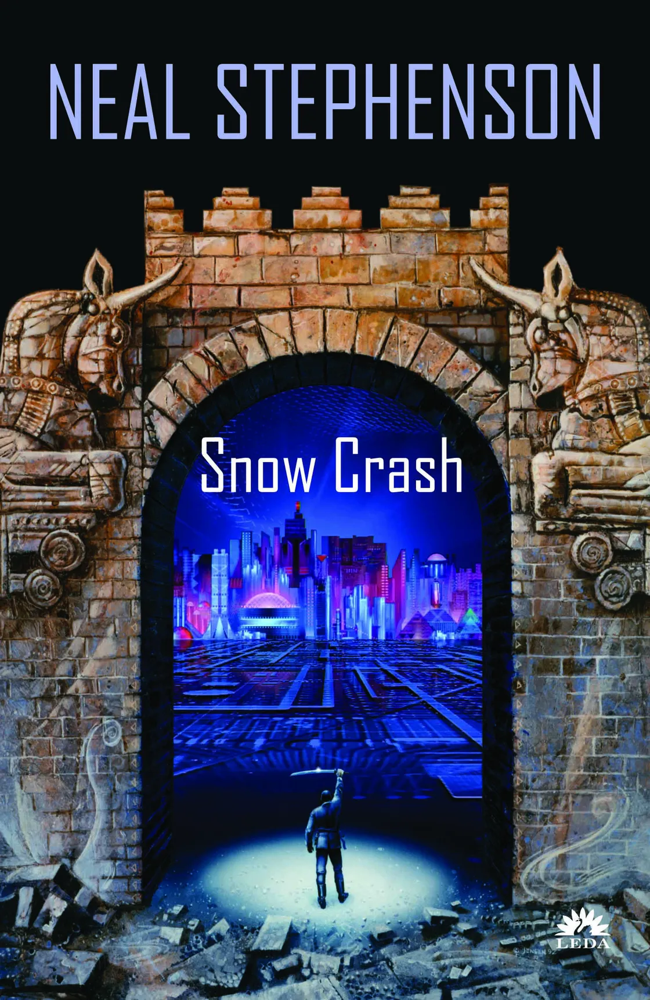

What is the Metaverse ?

Introduction
Since Facebook rebranded as Meta on October 28, 2021, the nebulous concept that inspired
the new name has been a hot topic of discussion. While it may seem that the metaverse is a
product of Meta’s wild ambition, that’s not the case at all. Some would argue that the
metaverse Mark Zuckerberg spent so much time describing during the Connect 2021 confere-
nce keynote already exists, while others see it as the next evolution of the internet known as
Web3 or Web 3.0.
In part, that’s because the metaverse means different things to different people, but it’s also
because the lines between the virtual world and reality have become blurred beyond recognit-
ion.
What's the metaverse,Exactly ?
“Metaverse” is currently a major buzzword in the worlds of tech, business, and finance, and
like all buzzwords its definition is fuzzy, contested, and shaped by the ambitions of the people
using it.Here’s one thing we can say for sure: The term was coined by Neal Stephenson in his
1992 novel Snow Crash to describe a virtual world in wide use in his imagined future, a 21st
-century dystopia. In Snow Crash, the metaverse is a virtual-reality world depicted as a
planet-encircling market where virtual real estate can be bought and sold, and where VR
goggle-wearing users inhabit 3D avatars whose form they have freedom to choose.
These three elements — a VR interface,
digital ownership, and avatars — still
feature prominently in current conceptions
of the metaverse. But none of them is actually
essential to the idea. In the broadest terms,
the metaverse is understood as a graphically
rich virtual space, with some degree of
verisimilitude, where people can work,
play,shop,socialize — in short, do the things
humans like to do together in real life (or,
perhaps more to the point, on the internet).
Metaverse proponents often focus on the
concept of “presence” as a defining factor:
feeling like you’re really there,and feeling
like other people are really there with you,too.
This version of the metaverse arguably already
exists in the form of video games. But there’s
another definition of the metaverse that goes
beyond the virtual worlds we know. This definition
doesn’t actually describe the metaverse at all,
but does explain why everyone thinks it’s so
important. This definition isn’t about a vision
for the future or a new technology. Rather, it
looks to the past and to the now commonplace
technologies of the internet and smartphones,
and assumes that it will be necessary to invent
the metaverse to replace them.

The influential venture capitalist Matthew Ball,who has written extensively about the metaverse,
describes it as “a sort of successor state to the mobile internet.” (Mark Zuckerberg, who last year
gave his company Facebook the name Meta and said the metaverse would be its focus,has used an
almost identical phrase; clearly, Ball’s essays are hugely influential on Silicon Valley thinking.)
Rememberwhen smartphones revolutionized tech, the economy,and society itself?The metaverse is
expected to be an equivalent watershed, and lots of businesses want to get ahead of that.
There are many things to challenge in Ball’s vision, but the biggest is his proposition that the
metaverse will be a single network as open,interconnected, and interoperable as the internet
is now. That’s a very big ask. But we’re getting ahead of ourselves.